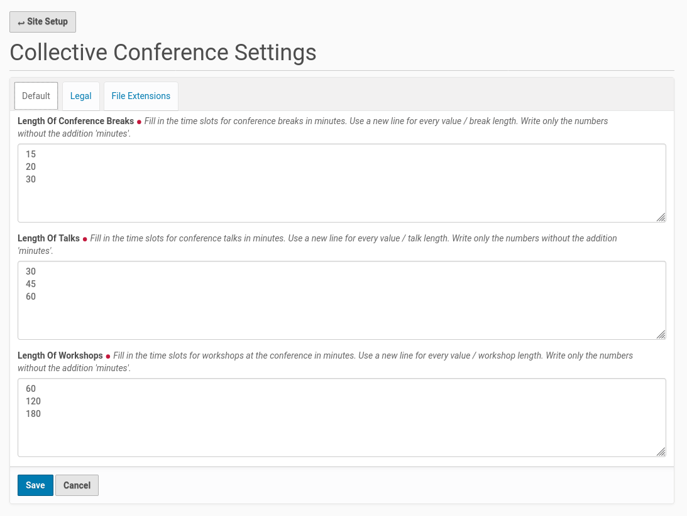
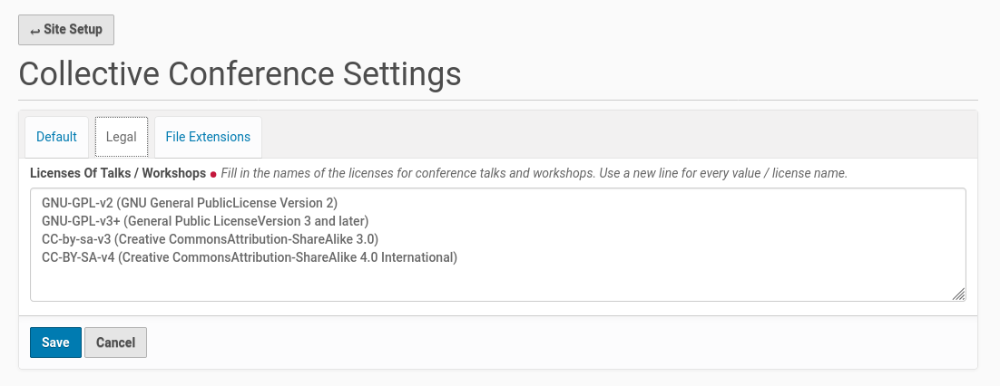
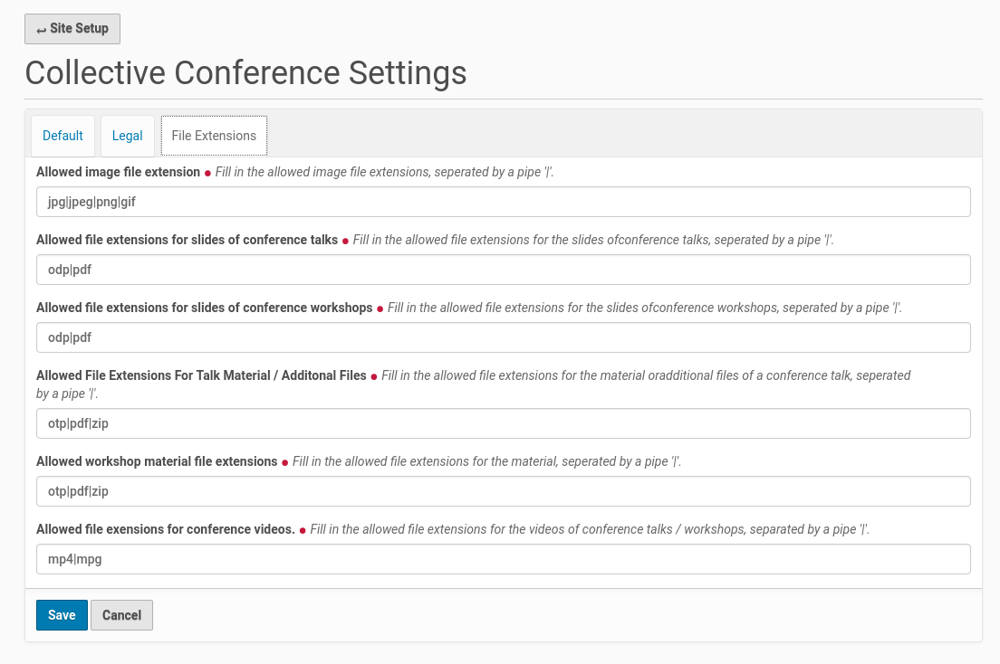

Configuration¶
The configuration of the add-on could be done from the Plone controlpanel ‘Site Setup’. You already used this panel during the installation of the add-on. There are entries for different configuration tasks.
{kind=link}
Collective Conferences Settings¶
Once you finished the modification of navigation settings you could scroll down a bit on the Site Settings page to the section for ‘Add-on Configuration’. There you find a new entry for this add-on with the title ‘Collective Conference Settings’. Click on this entry and you get a form with fields to configure the add-on.
{kind=link}
The fields on the first register ‘Default’ collect the values for the length of conference breaks, talks and workshops. This fields comes already with some default value. You could replace this values with your own choice. Every single value needs a new line.
The entries of the fields for talk and workshop length will be used to configure the available options for the talk and workshop proposal submitters to suggest a time slot. The values of the fields are also used by the conference organization committee to set the length of talks, workshops and conference breaks in the conference program and its tracks.
The second register ‘Legal’ currently holds only one field to list the licenses, talks and workshops could be submitted. This field came with some default values too. The default values could be replaced by new entries. Every value needs a new line.
{kind=link}
The third register ‘’File Extensions’ need your input about the allowed file extensions for images (e.g. pictures), for talk and workshop slides, for additional talk and workshop material and conference videos. If there are different file extensions allowed for this file categories you could enter this file extensions seperated by a pipe into the form fields, e.g.: ‘odp|pdf’ for slides.
{kind=link}
Once you finished the configuration within the fields of all three register save your changes. This will write some new entries to the ‘Configuration Registry’ of the Plone site. This new Configuration Registry entries will be used for the dynamic content of the edit forms of talks and workshops.